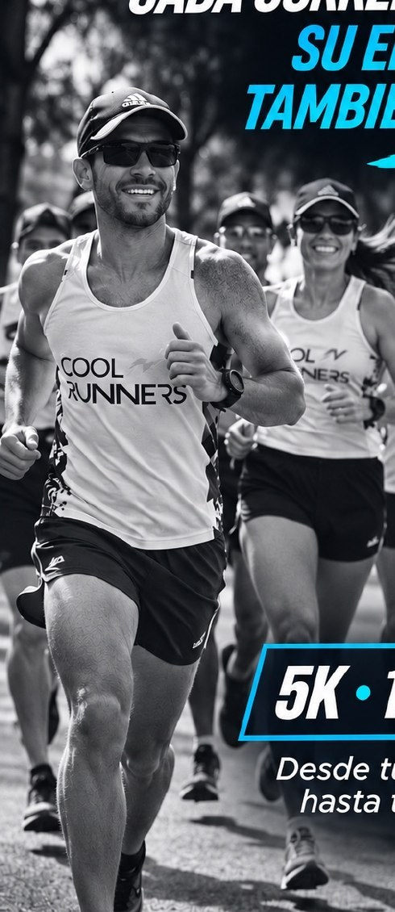
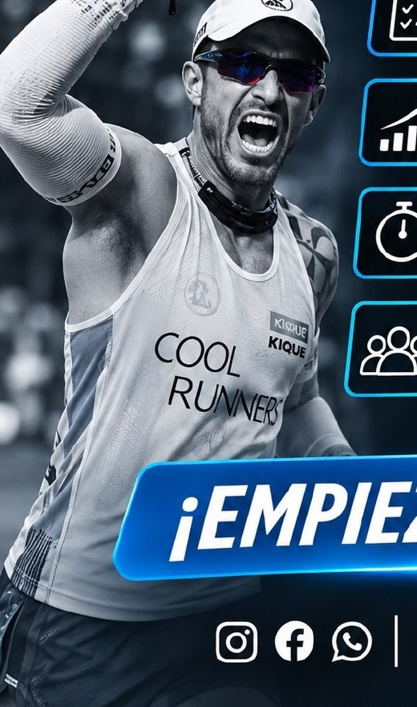
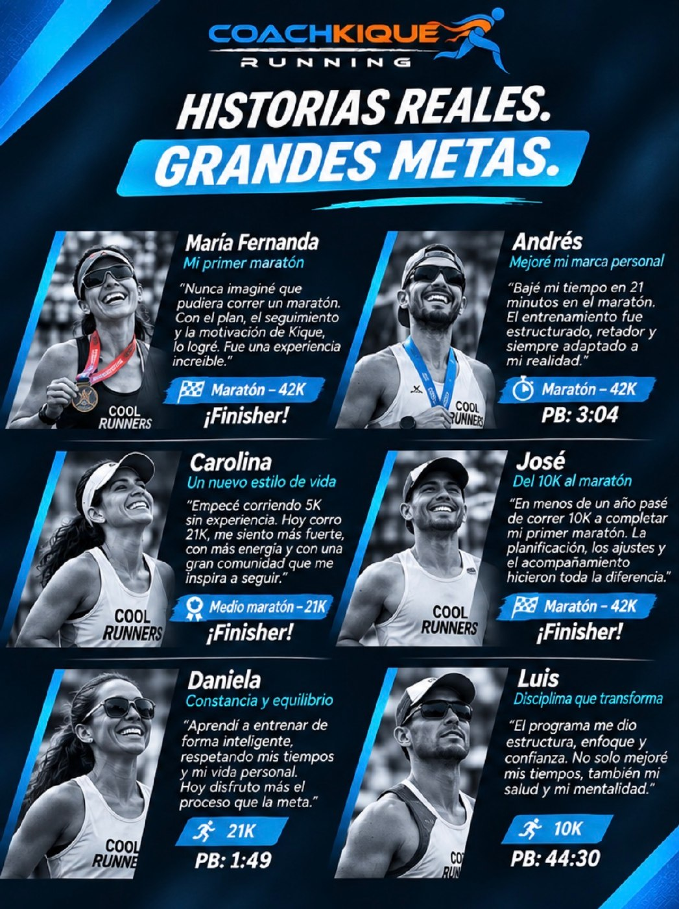

RUNNING
Entrenamientos estructurados, ritmos personalizados, intervalos, tempo, cuestas y resistencia aeróbica.
01 / RESISTENCIATu meta. Tu ritmo. Tu plan.
Entrenamiento personalizado para corredores de todos los niveles. Desde tus primeros kilómetros hasta ese reto que hoy parece imposible.
01 / CONOCE A TU COACH
Desde 2010 acompaño a corredores de distintos niveles a alcanzar metas reales: desde sus primeros kilómetros hasta el maratón.
Mi objetivo es ayudarte a convertir tu próxima meta en realidad, con un plan que encaje con tu vida y evolucione contigo.
02 / CADA CORREDOR ES DIFERENTE

No importa si estás empezando a correr, quieres mejorar tu marca personal o sueñas con conquistar un maratón.
Tu entrenamiento se adapta a tu nivel, disponibilidad, evolución y objetivos.
Desde tus primeros kilómetros hasta tu próximo gran reto.
03 / MI METODOLOGÍA
Entrenamientos estructurados, ritmos personalizados, intervalos, tempo, cuestas y resistencia aeróbica.
01 / RESISTENCIAFuerza funcional diseñada para complementar el entrenamiento de los corredores.
02 / FUERZATecnología V.O2, metodología VDOT, seguimiento de tu evolución y entrenamientos en tu reloj compatible.
03 / TECNOLOGÍAComparte kilómetros, experiencias y metas con la comunidad CoolRunners.
04 / COMUNIDAD04 / TU ENTRENAMIENTO, AL SIGUIENTE NIVEL

05 / HISTORIAS DE CORREDORES
Porque detrás de cada marca hay una persona, una historia y mucho trabajo compartido.
Un primer maratón hecho realidad, con planificación, seguimiento y motivación.
42K · FINISHERUna mejora de 21 minutos en el maratón gracias a un entrenamiento estructurado.
MARATÓN · PB 3:04De empezar con 5K a completar 21K, ganando fuerza y confianza.
21K · FINISHERDel 10K a su primer maratón con planificación y acompañamiento.
42K · FINISHEREntrenar con inteligencia, respetando sus tiempos y su vida personal.
21K · PB 1:49Más estructura, enfoque y confianza en su proceso de entrenamiento.
10K · PB 44:30
06 / TU PRÓXIMO RETO EMPIEZA HOY
Configuración inicial y acceso a V.O2.
Entrenamiento personalizado continuo.
CoolRunners es una comunidad de running sin costo. El servicio de coaching personalizado es opcional y tiene las tarifas indicadas.
07 / HABLEMOS DE TU META
Cuéntame qué quieres lograr. Diseñemos juntos el camino hacia tu próxima meta.